Aug 2026 · data migration, CalDAV, self-hosting
I left Google Calendar and Tasks without losing anything. Divorce by stages: first the furniture, then the keys. This post is the receipts.
Every piece of data gets exported, migrated to Radicale on jacinto (my Raspberry Pi, a self-hosted CalDAV server), verified, and only then is Google retired. Tasks first, then Calendar, then the kanban sync; contacts, Drive, photos and mail are next.
Direct export beats Takeout for Calendar: Settings → Import & Export is instant, Takeout takes hours. Use Takeout only when you want everything at once.
The migration is the same pipeline instinct as adtech: idempotent by key, dry-run first, verify after:

Live numbers today: 4,531 events in eve/work/, 608 tasks in
eve/tasks/.
Tasks.json → one VTODO each, Google list id as
CATEGORIES, task id as UID (idempotent re-runs).
eve/work/ (laburo) + eve/calendar/
(personal).
Bugs that almost ate the calendar:
<D:href> matches nothing; use a flexible
regex. Count with a REPORT query, never PROPFIND.
# RFC 5545: folded lines start with a space, so unfold before parsing raw = re.sub(r"\n[ \t]", "", raw)
DAVx5 on the phone speaks CalDAV to the Pi: Tasks app for todos, Etar for the calendar. All 4,531 work events on the phone, and everything syncs back.
Contacts → vCard, Drive → rclone, Photos → Immich, Mail → himalaya. Not done yet; each one gets the same treatment: export, migrate, verify, retire.
Google will be fine without my calendar. The question was whether I would be fine without theirs: the answer was a 4,531-event export and a Raspberry Pi named jacinto.